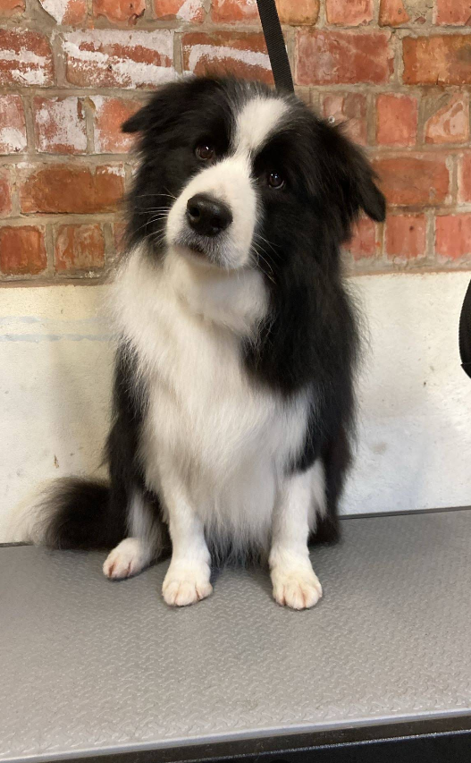

Een rustige trimbeurt voor de hond of kat die het liefst gewoon thuis blijft.
Femke neemt de tijd voor elk dier. Ook voor de bange, de eigenwijze of de hond of kat die al eens een slechte ervaring had. Zo komt je viervoeter fris, gekamd en ontspannen weer buiten.

Welke vacht heeft jouw hond?
Elke vacht vraagt een andere aanpak. Kies een type en zie wat we meestal doen en hoe vaak je best langskomt.
- Wat we doen
- Hoe vaak
Diensten
Een volledige beurt duurt zo lang als jouw hond nodig heeft. Prijzen hangen af van ras, grootte en vachtconditie.
-
Volledige trimbeurt
Wassen, föhnen, kammen, scheren of knippen in de gewenste stijl, nagels en oren.
Prijs op aanvraag -
Kattentrimmen
Uitkammen, ontklitten en trimmen voor langhaarkatten, in een rustige omgeving en op het tempo van je kat.
Prijs op aanvraag -
Wassen en föhnen
Voor honden die geen knipbeurt nodig hebben, maar wel een frisse, zachte vacht.
Prijs op aanvraag -
Ontklitten en uitkammen
Voorzichtig en in rust, zodat de huid niet pijn doet. Bij zware klitten bespreken we eerst de opties.
Prijs op aanvraag -
Nagels, oren en pootjes
Een snelle onderhoudsbeurt tussen twee trimbeurten door.
Prijs op aanvraag -
Kennismaking voor pups en angstige dieren
Korte, rustige bezoekjes zodat je hond of kat de salon leert kennen voor de echte beurt.
Prijs op aanvraag
Wat baasjes zeggen
Gemiddeld 4,7 uit 15 Google-reviews.
Femke is rustig en straalt vertrouwen uit, wat voor onze Aussie heel belangrijk is. Ook de moeilijkste hond is in heel goede handen.
Onze 7-jarige Border Collie wordt goed gesoigneerd. Helemaal tevreden met de super service.
We zijn heel tevreden over de service en de vriendelijke persoon.
Afspraak aanvragen
Vul het formulier in en Femke neemt zo snel mogelijk contact op om een moment af te spreken. Liever bellen? Dat kan ook op 0469 68 14 56.
Praktisch
Adres
Trimding Lewishonden- & kattentrimsalon
Jan Frans Faveletstraat 44
9120 Kruibeke
Openingsuren
| Maandag | Op afspraak |
|---|---|
| Dinsdag | Op afspraak |
| Woensdag | Op afspraak |
| Donderdag | Op afspraak |
| Vrijdag | Op afspraak |
| Zaterdag | Op afspraak |
| Zondag | Gesloten |